아테네인들이 아테네 여신의 옷을 벗겨야 했던 까닭은 ?
게시: 2020-03-05T06:30:23+09:00
고대 그리스 병사들의 급료에 대해서는 설이 몇가지 있는데, 조금씩 주장하는 바가 다른 것 같습니다.
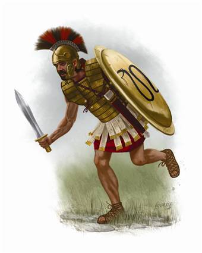
(내 월급이 궁금해 ?) 설#1. 시민 병사들은 따로 급료를 받지 않았을 뿐 아니라, 자신과 자신의 노예가 필요로 하는 식량도 스스로 비용을 대야 했다. 설#2. 시민 병사들도 국가로부터 일정액의 급료를 받았으나, 대개 이 돈은 병사 자신과 노예의 식량 구입에 쓰였다. 설#3. 용병들은 분명히 따로 급료를 받았으나, 액수가 적은 편이었고, 대개 숙련공의 절반 정도였다. 용병들이 돈을 벌 기회는 대개 적 도시를 약탈할 때 뿐이었다. 설#4. 방어전에 고용되는 용병들에게는 급료가 지급되었으나, 적 영토를 침공하기 위해 고용된 용병들에게는 급료가 지급되지 않았으며, 용병들은 순수하게 약탈을 목적으로 전쟁에 참여했다. 이 주장 모두가 맞을 수도 있습니다. 펠로폰네소스 전쟁이 장기화되면서, 전쟁의 양상이 다양한 형태로 전개되었기 때문입니다. 펠로폰네소스 전쟁 이전에는 위의 설#1이 일반적이었던 듯 합니다. 그러다가 전쟁이 장기화되면서, 일반 시민병들의 가세가 몰락했고, 그러면서 일반 시민들도 일종의 용병처럼 변질되어 전쟁에 참여하게 된 모양입니다. 일반 시민들이 용병처럼 변질되었다는 말은 얼마되지도 않는 급료를 노리고 병역에 자원했다는 이야기입니다. 심지어 굳이 국가에서 전쟁을 하지 않아도, 먹고 살기 위해 다른 도시국가의 전쟁에 병사로 참전하는 경우도 많았나 봅니다. 투키디데스가 쓴 펠로폰네소스 전쟁사를 보면 재미있는 기록이 있습니다.
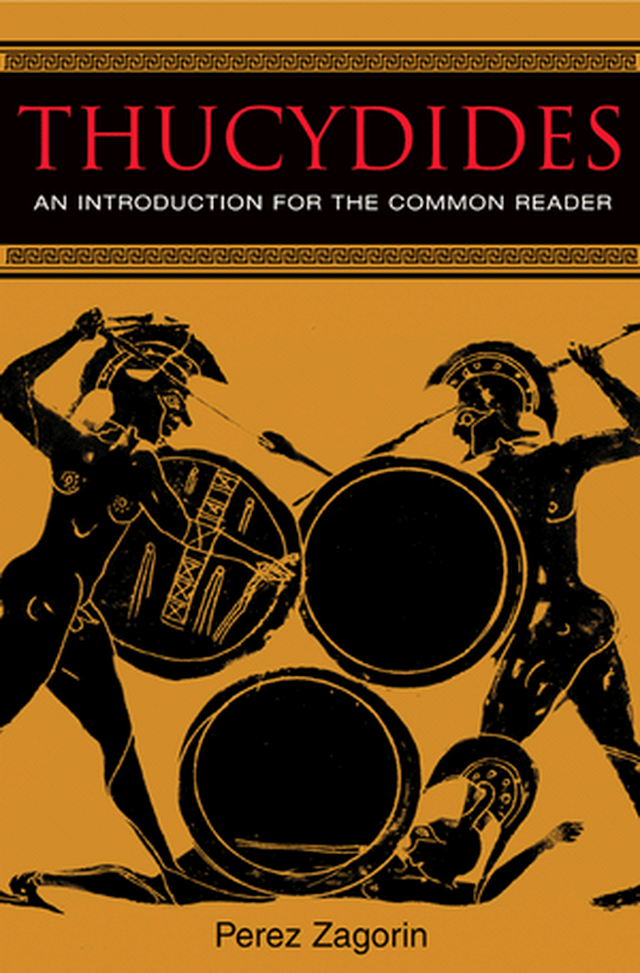
펠로폰네소스 전쟁이 막바지에 이르렀던 아에고스포타미의 전투를 보면, 아테네 측이나 라케다에몬(스파르타) 측이나 병사들의 급료를 마련하기에 급급하였던 것을 알 수 있습니다. 라케다에몬이 페르시아의 재정지원에 힘입어 선원 일당을 평소의 2오볼에서 3오볼로 올리자, 상당수의 아테네 측 선원들이 라케다에몬 측으로 넘어왔다는 기록이 있습니다. 설마 아테네 시민들이 급료 문제로 적국으로 투항할 리는 없으므로 그 선원들은 용병들이었을 가능성이 큽니다. 그러나, 아테네 시민이라고 해도, 선원들은 대개 빈곤층 출신이 많았으므로, 그런 장기간의 전쟁에서 급료없이는 스스로 먹고 살 길이 막막했을 것입니다. 따라서 적어도 자신의 식량을 살 수 있을 정도의 급료는 받았을 것으로 생각됩니다.
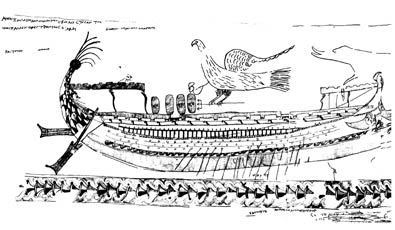
(저 좁은 배 안에 빽빽히 앉아서 노젓는 수병들의 급료를 생각하면... 저건 군함이 아닙니다 돈먹는 하마입니다) 위에서 언급한 일당 2, 3오볼이라는 액수가 당시 병사들의 절박함을 반증해줍니다. 평상시 그리스 숙련공의 하루 일당이 약 1드라크마, 즉 6오볼이었습니다. 즉 평상시 일당의 1/2, 1/3 정도의 일당만으로도 죽음을 무릅쓰고 전쟁에 참여했고, 더 심각한 것은 평상시 일당의 1/6에 해당하는 돈에도 어제까지 같이 싸우던 아군을 배신할 정도였다는 이야기지요. 당시 사람들이 먹고 살기가 무척 어려웠다는 것을 보여주는 일화입니다. 용병하면 만화책이나 뭐 만화책 수준의 헐리웃 영화때문에, 흔히들 상당한 보수를 받는 전투의 귀재들이라는 생각이 들겠지만, 원래가 용병이라는 직업은 정말 먹고 살기가 힘들어서 위험한 일에 몸을 던지는 직업이기 때문에, 급료가 상당히 낮은 편이었습니다. 이는 우리가 살고 있는 현 시대도 마찬가지입니다. 최근 몇년간 이라크에 파견되어 나가는 민간 무장 경비업체들 직원들을 보면, 미국 내에서 제대로 된 직장을 구하지 못하여 어쩔 수 없이 가족과 눈물로 작별하며 삶과 죽음이 교차하는 이라크로 떠나는 사람들이 상당수인 모양이더군요.
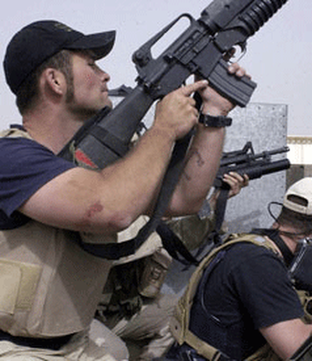
(알고보면 이 아저씨들도 처자식 먹여살리려고 목숨을 건 불쌍한 가장들...) 특히 용병은 정예병과는 거리가 좀 있었습니다. 그리스 도시 국가들의 주력부대는 중장보병(重裝步兵, hoplites)이었는데, 적어도 전쟁 초기에는 이들은 모두 100% 시민병으로 이루어져 있었습니다. 그것도 어느 정도 재산이 되는 시민들만이 중장보병이 될 수 있었는데, 이는 그 갑주와 방패가 상당히 비싼 물건이었기 때문이었습니다. 애초에 이런 무장을 갖출 수 있을 정도의 재산이 있다면, 굳이 목숨을 걸고 남의 나라 전쟁에 끼여들 필요가 없었을 것입니다.
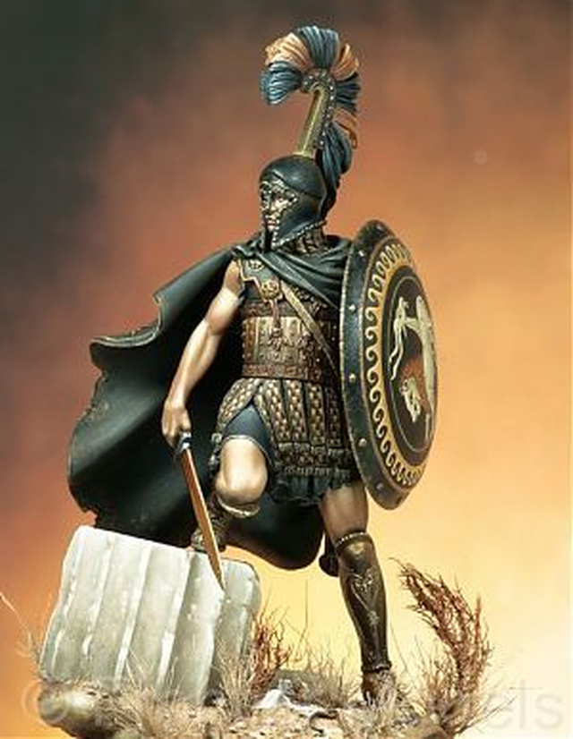
(용병들 중에서는 이렇게 영웅적인 무장을 갖춘 호걸을 찾아보기 힘들었지요) 대개 용병은 중장보병을 보조하는 역할, 즉 경장보병(peltast)나 궁수, 돌팔매꾼 등으로 참전했습니다. 원래 그리스인들은 도리아인의 도래 이후로는, 활에 대해서 '야만족들의 주무기'라는 그리 좋은 생각을 가지고 있지 않았기 때문에, 그리스 본토인들 중에는 솜씨있는 궁수들이 많지 않았습니다. 대개 크레테 섬 출신의 궁수들을 많이 고용했습니다. 그리고 트라키아의 경장보병들과 로데스 섬의 돌팔매꾼이 유명했습니다. 그러나 나중에 가면 이런 지역 출신 말고도, 가난한 지역 주민들이 대거 용병으로 참전하기 시작했습니다. 대표적인 지역이 아르카디아 지역으로, 이 지역은 내륙 지방이라 교역도 어렵고, 또 대부분이 산악지형인 관계로 농사도 잘 안되어서, 주민들 생활 수준이 매우 낮고, 큰 도시도 없던 지역이었습니다.
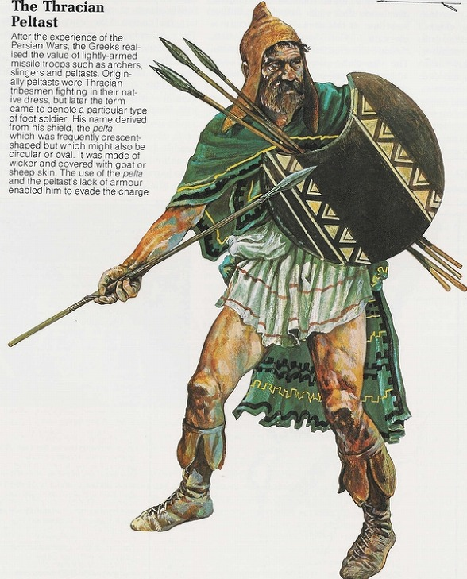
(처음에는 진짜 트라키아인들을 불러서 펠타스트로 썼지만, 나중에는 트라키아식으로 무장한 그리스인들이 펠타스트 역할을 수행했습니다.) 용병 중에 예외적인 경우가 있다고 하면, 페르시아의 왕자 키루스(Cyrus)를 따라 페르시아 내륙지방으로 행군했던 1만명의 그리이스 용병단, 세칭 키루스의 1만명이 있습니다. 이들은 대부분 중장보병으로 이루어진, 비교적 정예부대로서, 펠로폰네소스 전쟁이 끝나서 당장 먹고 살 길이 막막해진 병사들이었습니다. 이들 중 일부는 고향에 어느 정도 재산이 있는 자들도 있었으나, 이들 역시 대부분은 가진 갑주와 무기를 빼면 남은 재산이 거의 없는 자들로서, 이들이 키루스의 소환에 응한 것도 대부분 급료와 약탈물에 대한 희망 때문이었습니다. 실제로, 이들은 갖은 고생 끝에 그리이스 변경 지대로 돌아온 다음에도, 종군 중에 떠들던 바와는 달리 고향으로 가지 않고, 다시 스파르타의 왕 아게실라우스에게 고용되어 다시 소아시아 지방에서 용병 생활을 계속 했습니다. 고향으로 돌아가도 먹고 살기가 힘들었기 때문이었습니다. 극히 일부 병사들은 고향으로 돌아갔습니다만, 이들도 그 여비 마련을 위해서 가지고 있던 갑주와 방패를 팔아야 했다고 하니까, 사실 '키루스의 거지들'이란 말도 그다지 틀린 말이 아니었던 것이지요.
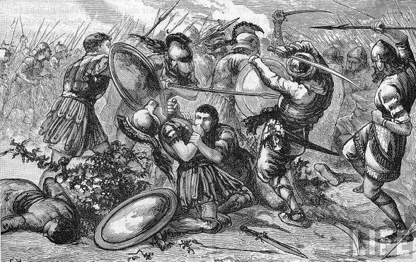
(키루스가 전사한 쿠낙사 전투에서의 그리스 용병들... 몇푼이나 벌어보겠다고... ) 이렇듯 용병들의 가장 큰 관심은 약탈물과 급료였으나, 전쟁 결과가 신통치 않았을 때는 물론, 심지어는 이기고 있는 측에 가담했다더라도, 급료가 체불되기 일쑤였습니다. 심지어 그토록 통이 크고 부자였던 키루스에게 고용되었던 1만명의 그리이스 용병들도 잠시 급료가 체불되기도 했었습니다.
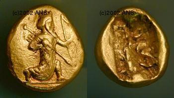
(이것이 페르시아를 침공했던 스파르타의 왕 아게실라우스를 물리친 영웅입니다. 페르시아는 전투에서 아게실라우스를 당해내지 못하자, 그리스 본국에 이 다릭 금화를 잔뜩 뇌물로 뿌려, 군대를 소환하도록 합니다. 결국 아게실라우스는 '나는 페르시아의 궁수들에게 쫓겨난다'라고 말하고는 철수했는데, 그 궁수라는 것은 바로 저 금화 속에 새겨진 궁수를 뜻합니다.) 급료가 체불되는 이유는 간단했습니다. 당장 돈이 없었기 때문이었지요. 원래 전쟁이라는 것은 대의와 정의를 위해서 한다지만, 실제로는 경제적인 문제가 주된 원인이거든요. 더 노골적으로 말해서, 돈이 없어서 전쟁을 하는 것인데, 애초에 용병들에게 뿌려댈 만큼 많은 돈이 있었다면 전쟁을 할 이유가 없었겠지요. 더군다나 당시 지중해 세계처럼 은화 위주로 운용되던 화폐 경제 체제에서, 페르시아 제국처럼 부유한 강국이 아니라면 대개 국고에 충분한 양의 은화가 비축되어 있지 않았습니다. 요즘처럼, 또는 제1,2차 세계대전 때처럼 지폐를 찍어낼 수도 없었으니, 당연히 만만한 용병들의 급료는 체불될 수 밖에 없었지요. 용병들은 이런 사실들을 잘 알고도 크게 개의치는 않았습니다. 일단 전투에 승리하게 되면, 거의 반드시 돈이 생긴다는 것을 알고 있었기 때문입니다. 전투에 이겼다고 왜 돈이 생길까요 ? 이는 당시의 빈약한 생산력과 관계가 깊습니다. 요즘 전투에서는 적의 무기나 적의 군복, 군화, 식기류 같은 것은 전혀 돈이 되지 않지요. 하지만 당시에는 큰 돈이 되었습니다. 생각해보십시요. 예수 그리스도의 남루한 외투조차도 서로 갖겠다고 로마 병사들이 주사위 놀음을 할 정도였쟎습니까 ? 그러니 적의 방패나 투구, 갑옷, 식기류, 심지어는 셔츠조차도 일단 내다 팔 수 있는 노획물이 되었습니다. 특히 페르시아인들의 수놓은 겉옷 등은 가난한 그리스인들에게는 엄청난 사치품이었으므로 큰 돈이 되었습니다.
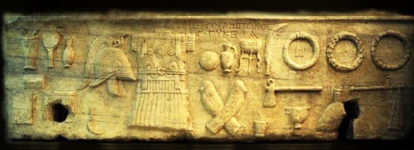
(알렉산더 대왕 사후, 후계자 전쟁이 한창이던 헬레니즘 세계에서의 병사들의 장비를 묘사한 조각입니다) 가장 큰 돈이 되는 것은 적의 포로 그 자체였습니다. 당시는 물품 뿐만 아니라 사람도 부족했거든요. 사로잡은 적의 건장한 병사는 아주 훌륭한 노예 상품이었습니다. 원래 같은 그리스인들끼리는 포로를 노예로 팔아버리는 일은 없었으나, 펠로폰네소스 전쟁이 장기화되면서, 그런 구분도 없어졌습니다. 심지어는 플라톤도 (비록 전쟁 포로는 아니었지만) 노예로 팔린 적이 있을 정도였으니까요. 이런 그리스인 노예들은 본국의 가족이나 친구들이 몸값을 내고 다시 자유인으로 풀어주는 경우가 많았습니다. 하지만 어쨌거나 위와 같은 상황은 용병이 공격군으로 참전할 때의 일이었고, 농성하는 성의 수비병으로 용병을 불러모으는 것은 결코 쉬운 일이 아니었습니다. 특히 상대해야 하는 적이 알렉산더의 마케도니아군처럼 막강한 상대였다면 더더욱 그랬습니다. 이런 경우 수비병으로 용병을 불러모으려면 정말 금이나 은으로 된 경화(硬貨)를 급료로 지불해야만 했습니다. 하지만 사정이 안좋아서 농성하게 된 주제에 그런 금화나 은화가 많을 수는 없었습니다. 아래 사진의 금화는 그런 아픈 사정을 가진 금화입니다.
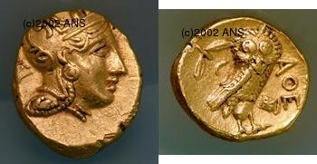
(금화 앞면은 아테네 여신을, 뒷면은 아테네 여신의 상징인 올빼미를 넣었습니다) 위 금화는 아테네가 기원전 296~294년 사이에 주조한 것으로, 이때 아테네는 마케도니아 왕조로부터 위협을 받는 상황이었습니다. 그 방어전의 비용을 위해 이 금화를 주조했습니다만, 원래부터 은화 위주의 화폐 제도를 펼치던 아테네가 갑자기 금을 어디서 구했을까요 ? 바로 파르테논 신전의 거대한 아테네 여신상에 입혀놓았던 금박을 벗겨내어 만든 것입니다. 그야말로 눈물의 금화인 셈이지요.
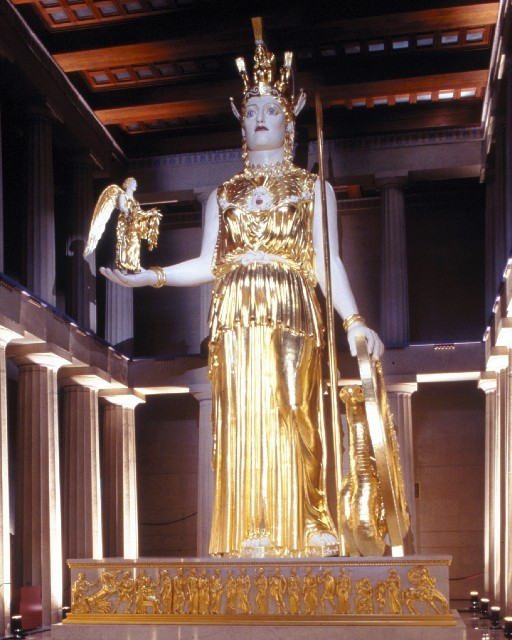
(예전에 파르테논 신전 내에 있었다는 거대한 아테네 여신상... 얼마나 궁했으면 여신의 옷을 벗겨 금화를 만들었겠습니까 ?)
** 예전에 올렸던 글의 재탕글입니다.